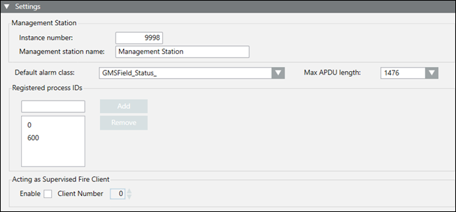

Settings

Settings | |
Field | Description |
Instance number | A unique number between 0 and 4194303 that identifies the management station on the network. |
Management station name | A unique name that identifies the management station on the network. |
Default alarm class | The alarm class to be used for status messages for this driver. |
Max APDU | APDU, or Application Layer Protocol Data Units, refers to the data packet length on the BACnet network. Each device reports the size of the largest message it can receive so that its internal memory buffers do not overflow when being sent a packet. For BACnet IP/Ethernet, the maximum message cannot exceed 1476 bytes. For MS/TP, the maximum message cannot exceed 480 bytes. You can use this setting to limit the message length when you have a segment of network between two other segments with a smaller APDU size. |
Registered process IDs | Used to filter alarms received by the management station. The defaults are 0 and 600. If you are integrating with a third-party vendor, consult with them to discover the Process IDs for their devices, and then add them if necessary. |
Enable | Used to monitor fire panels that support client supervision. |
Client Number | Used to assign a number that corresponds with the monitored fire panel. |